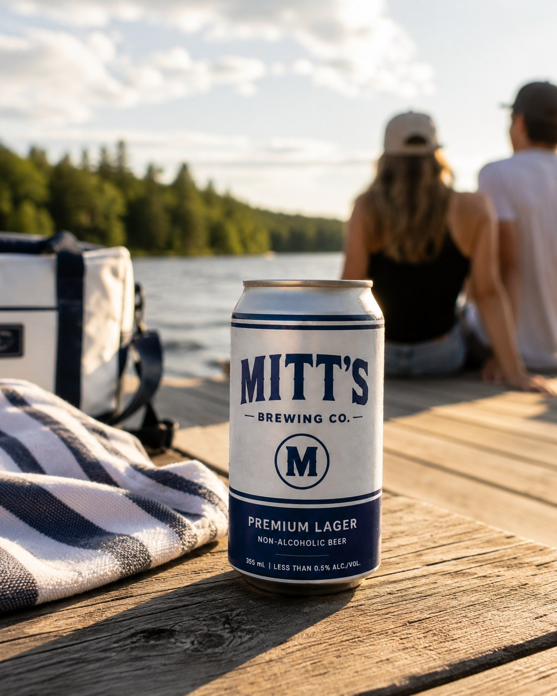

It started with
an old truck.
The truck was called Mitt. The name—and the feeling—stuck.

A truck called Mitt.
Rough around the edges. Reliable enough. Impossible to forget.
The name came from an old pickup called Mitt. It carried the kind of memories that make ordinary nights matter.
Carefree nostalgia.
Good people. Open plans. Nowhere urgent to be.
The feeling
Good company and enough room for the night to change.
The visual world
Brushed silver, deep navy and warm roadside light.
The beer
Crisp, clean and easygoing.
The promise
A non-alcoholic beer that belongs in the moment.
The name came from a truck. The brand came from everything around it.
Make the moment.
The best moments often begin casually.
A cold can. An open seat. Enough.

Premium Lager is coming.
Release date and confirmed stockists, straight to your inbox.